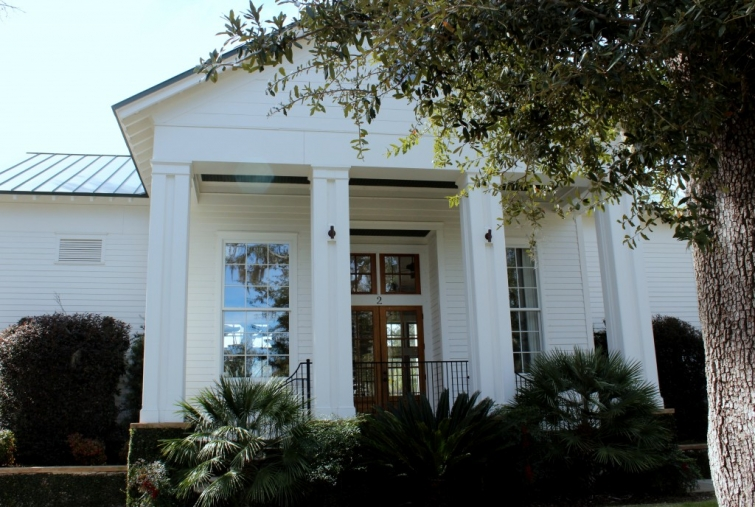

.png)
.PNG)
.PNG)
.PNG)
.PNG)
.PNG)
.JPG)
.JPG)
.PNG)
.PNG)


That swing was in the Habersham development a few miles outside of Beaufort. It is one of three developments I wanted to visit while we were in that area. (You can read about Oldfield here, and the final one will be in my next post.)
Habersham is a planned community designed by the Duany Plater-Zyberk Company (of Seaside fame.) The building above is the clubhouse, and behind it are tennis courts, a pool, and a playground. They also have a community garden area. (Since it is February, there is not much growing in it right now.)
We parked the car and explored the community on foot, and I snapped away with my camera so that you could see all the precious homes. Sooooo many were little white cottages. Take a look at these charmers:


There was one or two blue ones in the bunch.
And then we came to this one…..
I recognized it from Coastal Living magazine. I did a search, and sure enough, it was their 2002 Cottage of the Year. Here is how it appeared in the magazine.
Linda Woodrum did the interiors of the cottage back then. Here is the living room with its cheerful combination of red and yellow (love that quilt!)
Here is the master bedroom as it looked in 2002… coastalliving.com
coastalliving.com
and here is the master bath.
I love all the windows, but I do wonder about privacy when you are taking a bath.
Now moving on down the street, the houses get a little larger. I also recognized the next one from the pages of Coastal Living.
When this house was featured in their magazine years ago, I thought it was so elegant. coastallivinghouseplans.com
coastallivinghouseplans.com
What I really liked about it was the staircase with the large window at the landing. coastallivinghouseplans.com
coastallivinghouseplans.com
And it has transom windows over the doorways. coastallivinghouseplans.com
coastallivinghouseplans.com
The somewhat small kitchen has rustic plank walls. coastallivinghouseplans.com
coastallivinghouseplans.com
Here is one of the baths. coastallivinghouseplans.com
coastallivinghouseplans.com
And I wish I had a laundry room this beautiful. coastallivinghouseplans.com
coastallivinghouseplans.com
This isn’t the only large home there. Here is another one (again painted white) with a sweet front porch.
Needless to say, I fell in love with the homes in Habersham. In addition to all their sports facilities, they have a town center with a few shops and restaurants…
And some gorgeous park areas to enjoy. I am going to leave you waiting on a bench again…this time at one of Habersham’s parks. Hope you enjoy the view.
until next time…


.PNG)
I didn’t get to Habersham on this trip to Beaufort, but it gives me an excuse to go back again. I am also a native Vermonter ( like your reader Lisa) transplanted to Massachusetts 30 years ago. Vermont is beautiful, no place like it on earth, but the older I get the more I crave some warmth and sunshine.
Thanks for the lovely words about Habersham. My family was lucky enough to get transferred to South Carolina in 2003. We found a lovely home with double wrap around porches that face one of the many parks. Great place to have coffee each day and visit with our wonderful neighbors. Habersham is a wonderful place to live.
———————————————————–
Thank YOU for your sweet comment, Pat! Habersham was gorgeous, and you are so very lucky to be living there. I am jealous! 🙂 Thank you for reading the post.
Kelly
My husband and I will be visiting friends in South Carolina for the holidays. I plan on visiting the Habersham development and was wondering if it is easy to locate the elegant larger house with the three porches that was featured in Coastal Living Magazine back in 2002? I would love to check out the area for a possible place to retire.
This past week my sisters and myself were on our way to Beaufort and took a wrong turn and discovered Habersham. What a place to get lost in. We were so elated with the calmness there and beauty of the homes. We caught ourselves whispering in the car because it was so quiet.
I could live there in a heartbeat!
Oh what a beautiful place! I love the metal roofs and the lovely, huge porches. These are gorgeous homes and the shops are cute too!
Jan ♥
———————————————————————-
Jan – Everything about Habersham was gorgeous! It had such a small town vibe to it, too. I would love to be a resident there.
Kelly
Just lovely. I love all those charming white houses (and of course the blue one). My hear aches for those large wrap-around porches, I can just imagine myself relaxing on one of them in a big rocker. I can’t believe your recognized those homes from the magazines, it must have made seeing them in person so fun and exciting. (its always more fun when you can put a little connection to something). As always, I love the way you take us on your walks, vacations, tours..you do it in such a personal way, its like taking the trip ourselves.
———————————————————————-
Christina – Aren’t those porches just wonderful? You are so right about having connections to things making it that much better. I am glad I could “take you along” on our trips! Not quite the same, but at least you get to see some of the places.
Kelly
I do believe we must be kindred spirits!! LOLOL.. 🙂 I fell in love with Beaufort 3 years ago when we visited there on a little road trip!! When you posted your finds… I had some of the very same pics …. lol… and now… I see you went to Habersham… SO DID WE!!! My sister and I were in search of the Southern Living Idea Home .. “Sugarberry Cottage”… Gorgeous !!! Did you see it??? Hope so… Loved Habersham… what a beautiful, laid back community!!!! Thank you so much for sharing your amazing pics!!! Terri
————————————————————————
Terri – We definitely must be kindred spirits if we had the same pics! That is too funny! Habersham was such a beautiful neighborhood. Everyone should love it! We did see the Sugarberry Cottage, but only from the outside. Did you get to go inside it? Hope you and I both get to go back to Beaufort for another trip one day. J Enjoy your Sunday!
Kelly
We moved to the coast of Mississippi 3 weeks before Hurricane Katrina. I would drive down Hwy 90, where you could view the beach on one side and beautiful 3 story homes or cottages on the other side. Beautiful trees dripping with Spanish moss were everywhere! Sadly MOST of those homes didn’t make it through the storm, and the sea water killed many of those trees. All the Spanish moss was gone. We visited Biloxi recently and it is bouncing back!! Homes are going up and the moss is growing. There is something quaint about the tree lined streets with the moss dripping from the branches. I have never been to Beaufort before, thanks for taking me there!!!!
———————————————————————
Jennifer – Thank you for the update on Biloxi. I spent a good bit of my childhood in Mobile, Alabama so I know what you mean about the beauty of the area with the gulf beaches, old homes, and trees with the Spanish moss. It is heart wrenching to see what wrath a hurricane can bring, but it is great to know that things are rebuilding there. Those big trees with the Spanish moss just seem to say “the South” to me. Love them. Glad I could “take you along” on our Beaufort trip. 🙂
Kelly
Sighing over all these lovelies, cottage or larger home??? (When I win the lottery, guess I know where I’m moving….!) And, I will have to get the Country Living decorator to design all the rooms in my dream home!!!
———————————————————————
Paula – It would take a win in the lottery for me, too! I know I would take a smaller cottage though…no doubt about it. I have gotten tired of cleaning house (of course if I had enough money for a large house, I would probably have enough to hire some help with the cleaning. 🙂 )
Kelly
You know, I think my hubby and i were there years ago…we are always going to those communities that feature the “dream homes”…I love those comunities and homes…We have planned a trip to Kiawah to see the HGTV Dream Home…can’t wait to see it…
I so love all of your home features and travels…so nice to go back in time to see the old pics of the Coastal Living House…Also, there was a Southern Living Idea House years ago in Tampa, Florida that was the image of the one with the wrap around porch …it was gorgeous!
————————————————————————-
Shirley – If you tour idea houses and dream homes, I bet you did see those. Habersham (and Beaufort for that matter) seems to be blessed with decorator homes. They are so much fun to visit. The one in Kiawah should be gorgeous. My all time favorite of the dream houses has been the one HGTV did at St. Marys, Georgia. I could have moved right on in and not changed one single thing. I don’t remember the one in Tampa..gonna go look that one up.
Kelly
Thanks for sharing these beautiful pictures! It looks like a fun place to visit!
——————————————————————–
Our Learning – It was a fun and beautiful place to see! I can’t believe I have lived all my life in the South and had never been there before. So glad you liked all the photos, and thank you for visiting the blog today. I hopped over to your site for a little while. The Reading Promise book you reviewed looked like a very sweet book. I am going to have to look for that one.
Kelly
Just lovely, Kelly! Thanks for sharing the sites with us! I really enjoy your views. The green building/store is my favorite!
———————————————————————
Dawn – I think I am going to give you the “Best Lover of Green” award! 🙂 I thought of you when we were in Low Country Market eating lunch amid all that lovely green painted trim. All of Habersham was beautiful to me – especially all the white cottages with black shutters.
Kelly
Kelly- What a wonderful planned community. We love Beaufort but have never visited the communities around it- Thanks for the tour- xo Diana
———————————————————————-
Diana – When you go back to Beaufort, you should ride through some of the planned communities between there and Bluffton. They are really lovely, and some even have cute shops to go to (not to mention the little restaurants.) I would imagine the gardens in the spring would be very pretty to see there, also.
Kelly
Beautiful community… I really love the way they preserved so many old trees (or do the trees grow really quickly there?) It makes it looked like an older established community, rather than a newer development.
——————————————————————–
Sarah – The trees there ARE gorgeous, and they did do their best to preserve as many as possible. But, the community is a little over 10 years old, so some of the vegetation has been planted and grown for that long. My husband and I were comparing the trees in our photos with those from the old issues of the magazine. The landscaping has been redone some.
Kelly
Oh Kelly, sighhhhhh. This looks like my dream place. Thank you so much for sharing this visit. My husband and I (native Vermonters) are researching and visiting possible retirement places once our youngest graduates from UVM. This is a possibility. I am in love….
———————————————————————
Lisa – We are researching places for retirement, too. That is why we were checking out all the places around Beaufort. As pretty as all of it was, I think I am still looking for something a little smaller. Regardless, it is fun to look at all of them! 🙂 So glad I could help you in your research. (But Vermont would be beautiful to me!)
Kelly
I would love to live in Habersham. It looks like such a relaxing place , good for the soul. I will be putting it on my list of places to visit. Thank you Kelly for giving us a glimpse of some very beautiful places . You do all the research and we hear of some great places to visit. Can not wait to see what is next
———————————————————————
Yarlette – I am glad you liked Habersham, too. It was a very relaxing place…saw several bike riders about town. I liked the “slowness” of the village, and you are right. It is good for the soul. Thank you for leaving your thoughtful comment here.
Kelly
DREAMY! **sigh**
———————————————————————-
Pamela – I feel the same way! It was certainly a dreamy place of perfection.
Kelly